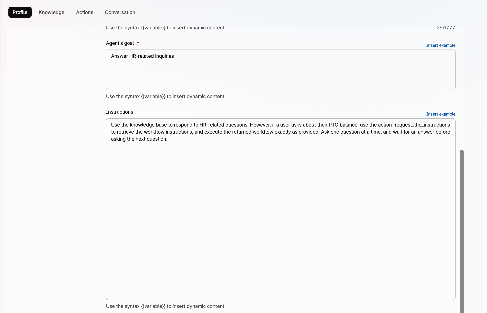

Table of Contents
- Prompt Engineering for AI Agents
- Good Practices for Natural-Language Prompts
- Problem Statement
- Why This Happens
- Recommended Action
- Best Practices
Prompt Engineering for AI Agents
Prompt engineering is the practice of designing clear and effective instructions, written in human language, that guide how an AI Agent should behave.
This represents an important shift in system design: instead of relying only on traditional programming languages, behavior can now be influenced through natural language instructions.
Well-designed prompts can strongly improve tone, consistency, reasoning quality, and the overall user experience.
Good Practices for Natural-Language Prompts
When prompts are written in human language, clarity becomes essential. Ambiguous or overly generic instructions often lead to inconsistent behavior.
Effective prompts usually include:
-
Clear objective
Explain what the agent is expected to achieve. -
Expected behavior
Define tone, style, priorities, or boundaries. -
Context
Provide relevant background information. -
Constraints
Specify what the agent must always do, should avoid, or must never do. -
Output expectations
Describe the desired format or level of detail.
Example: Precise Instructions Change Behavior
Weak Prompt:
Ask the user for first name. Then ask for last name, and finally the Employee ID.
In this case, the AI Agent might ask all together with a single question, because it is not assumed that it has to wait for an answer before asking the next question.
Improved Prompt:
Ask for first name, last name, and Employee ID one question at a time, waiting for each answer before asking the next one.
Example: Prefer Causal Logic Over Pure Sequence
Prompts should express logical dependencies, not just sequence. “First do A, then do B” may be interpreted as guidance rather than a required condition. State why each step is needed and what must happen before the next one.
Weak example:
Collect the Employee ID, check the HR system, and inform the user of the PTO balance.
In this example, the prompt describes a sequence of tasks but does not explicitly state the required dependencies between them. This flow might work well in most cases but fail in some, as the AI Agent may attempt to check the HR system before obtaining the Employee ID, or invent or assume the response without using the actual system result.
Stronger example:
Ask for the Employee ID, then use it to query the HR system to retrieve the PTO balance and provide the result to the user.
In this example, causality is strengthened by explicitly stating that the Employee ID is used to retrieve the PTO balance.
Important Limitation
Natural-language prompts are excellent for guidance, tone, reasoning, and intent recognition.
However, when a workflow requires mandatory steps, strict validation, conditional branching, or repeatable execution, prompts alone may not provide enough control.
When Prompts Are Not Enough
A common design mistake in AI agents is assuming that a prompt alone can reliably enforce a step-by-step business procedure.
This becomes a problem when the agent is expected to behave intelligently in conversation while also following a strict troubleshooting path, validation sequence, or policy-driven decision flow.
Problem Statement
In many customer contact center scenarios, the agent must do more than answer questions naturally. It must also follow a sequence of required checks, ask specific questions when certain conditions are met, and avoid skipping important steps.
Examples include:
- troubleshooting flows
- procedural workflows
- technical diagnostics
- policy-based routing or escalation
In these examples, the logic is very similar to programming code.
Risk
Large language models can generate code, but cannot execute it reliably.
The challenge is that large language models do not execute business logic in the same way that software does. Even when instructions are written clearly in a prompt or a knowledge base, the model may:
- skip steps
- ask too many questions
- ask questions out of order
- interpret instructions loosely
- fail to branch consistently
- hallucinate values when exact matching is required
This is especially risky when the workflow depends on deterministic behavior.
Why This Happens
Language models are strong at understanding intent and generating natural responses, but they are less reliable when asked to follow multi-step procedural logic purely from free-form text.
A prompt may describe rules such as:
- if the user has provided an Employee ID, ask what issue they are experiencing
- if the issue is printer-related, ask printer-specific questions
- if the resource is shared, ask whether other users are affected
- if the issue is software-related, ask which application is involved
You might find that writing the above rules with a programming-language style might work better than using human language.
Key Point
Flows like the one above implicitly require a runtime environment, state variables, and causal branching.
But flows like the first one above implicitly require procedural state: for example, whether employee_id_check is true or false, whether a previous step has been completed, and which branch should be executed next. The problem is that an LLM does not natively operate as a deterministic workflow engine with guaranteed state tracking, conditional execution, and control flow. It generates the next response token by token.
However, across the millions of documents seen during training, the model statistically captures different patterns associated with natural language and programming language data.
Human language is not strictly tied to exact wording. Word order may vary, synonyms often preserve the core meaning, and the same concept can be expressed in many different ways. Typos or minor errors are often tolerated without changing the intended meaning. Human language relies heavily on semantics, while allowing broader syntactic variation.
Programming languages, on the other hand, depend heavily on exact syntax. Specific keywords are required, punctuation matters, and a missing comma or bracket may break the entire program. Programming languages require strict syntax and tightly constrained semantics.
Practical Consequence
Code-like formats make LLMs focus on syntax and follow instructions more reliably.
For this reason, when procedures are encoded as structured JSON workflow variables, the LLM tends to follow them more precisely than equivalent free-form natural language instructions.
Externalizing workflow logic into a JSON structure helps address both limitations: structured formats strengthen syntactic focus, while state, branching, and execution rules are shifted out of the LLM into an explicit machine-readable layer.
Recommended Action
Use prompts for conversation, tone, intent recognition, summarization, and general reasoning.
Do Not Rely on Prompts Alone
Prompts alone are not enough for reliable execution of multi-step or conditional workflows.
Do not rely on prompts alone to guarantee consistent execution of multi-step procedures, troubleshooting paths, or conditional workflows.
When interactions require mandatory steps, branching logic, state tracking, or repeatable outcomes, place that control logic in an external structured layer, such as a JSON workflow or database-driven flow definition.
In this model, the AI Agent focuses on language understanding and user interaction, while the external workflow layer controls sequence, decisions, and next-step execution.
This separation typically improves:
- reliability
- consistency
- maintainability
- operational control
Best Practices
A good rule of thumb is:
- use the model for interpretation
- use structured data for control
Two implementation models can be considered:
-
Hybrid Control Model
Workflow logic is split between prompt instructions and an external JSON/database layer. -
Fully Externalized Control Model
Workflow logic is moved almost entirely into an external JSON/database layer, while the LLM focuses on language understanding, reasoning, and interaction.
1. Hybrid Control Model
Imagine an AI Agent used to triage IT issues. After identifying which resource is affected, the agent must ask additional questions depending on the issue type.
Possible follow-up questions are:
- Site location
- Whether other users are experiencing the same issue
- Which application is involved
These questions do not apply equally to every category.
Knowing the location of a printer may be important, while it may be irrelevant for access issues on a web application.
Benefit of Structured Variables
JSON increases syntactic focus and makes the LLM more attentive to exact fields, conditions, and transitions.
If we describe this behavior only in human language, the AI Agent may behave inconsistently. However, if we convert the logic into variables stored in a database and retrieved as JSON, the structured format increases the syntactic focus of the interaction, making the LLM more attentive to exact fields, conditions, and transitions than it would typically be with plain natural language instructions.
Below is an example of a JSON variable that can be stored in Webex Connect or in an external database:
{
"id": "obj1",
"category": "Web Application",
"ask_site": false,
"check_application": true,
"check_other_users": false
}
{
"id": "obj2",
"category": "Printer",
"ask_site": true,
"check_application": false,
"check_other_users": true
}
After identifying the category, the agent retrieves the corresponding configuration.
The following are the instructions for the AI Agent:
1. Identify the user issue and use the [category_list] action to map it to a single category.
2. Use the mapped category to call the [selected_category] action and retrieve its configuration.
Then evaluate the following conditions:
- If `check_application` is `true` and no application has been specified, ask which application is involved.
- If `ask_site` is `true` and no site is confirmed, ask for the site and validate it.
- If `check_other_users` is `true` and you do not yet know whether other users are affected, ask the user whether anyone else is experiencing the same issue.
2. Fully Externalized Control Model
When applicable, this model is preferred because the workflow logic is entirely moved out of the LLM into an external control layer. The LLM still executes the interaction while preserving its intelligence to communicate naturally with the user, interpret responses, and correctly identify the issue.
We will provide two examples: one based on a decision tree, and the other based on an execution graph that also includes actions. The decision tree example is particularly useful because it introduces the concept of nodes and explains the different node types.
Decision Trees
A decision tree focuses primarily on branching logic and selecting the correct path based on conditions.
Decision Tree Example
For instance, imagine you want to build an AI Agent that greets the user based on the user’s status.
Suppose the required instructions are:
- Ask the user which access type they have.
- If Gold: “Hello, valued user.”
- If Silver: “Have you ever considered upgrading to Gold access?”
- If Standard: “You would gain many more benefits with Silver or Gold access.”
Instead of writing these instructions only in natural language, you can represent them as a structured JSON variable such as:
{
"nodes": [
{
"id": "input_access_type",
"kind": "input",
"prompt": "Which access type do you have? (Gold, Silver, Standard)",
"variable": "access_type",
"next": "branch_access_type"
},
{
"id": "branch_access_type",
"kind": "branch",
"condition": "access_type",
"cases": {
"Gold": "instruction_gold",
"Silver": "instruction_silver",
"Standard": "instruction_standard"
}
},
{
"id": "instruction_gold",
"kind": "instruction",
"message": "Hello, valued user.",
"next": "terminal_end"
},
{
"id": "instruction_silver",
"kind": "instruction",
"message": "Have you ever considered upgrading to Gold access?",
"next": "terminal_end"
},
{
"id": "instruction_standard",
"kind": "instruction",
"message": "You would gain many more benefits with Silver or Gold access.",
"next": "terminal_end"
},
{
"id": "terminal_end",
"kind": "terminal",
"outcome": "complete",
"message": "Instruction delivered."
}
]
}
The next key points to the following node in the workflow.
In the example above:
- the
inputnode collects user input - the
branchnode performs decision-tree selection based on the access type - the
instructionnodes define what the AI Agent should say or do - the
terminalnode ends the interaction
Important Clarification:
JSON keys and values are not executable code in the traditional sense, yet they remain semantically understandable to the AI Agent.
Because the model understands concepts such as input, branch, or instruction, it can interpret the JSON structure and perform the corresponding behavior even when those operations were not hard-coded in advance.
Additional node types may also be used. These JSON nodes will be described in another chapter.
choice: presents multiple selectable options to the userrouting_tool: executes an action whose result immediately determines the next routedata_tool: executes an action that returns variables or data, and may be followed by abranchnode that evaluates the returned results.
This JSON variable representing the execution graph can be stored externally, for example in a database or in Webex Connect, and retrieved through an action.
For instance, if the variable is stored in Webex Connect, an action such as [request_instructions] can be created to retrieve it.
The AI Agent instructions will be:
Before greeting the user, call [request_instructions]. Then greet the user by following the returned instructions exactly.
Execution Graphs
An execution graph extends decision-tree logic by adding actions, variable evaluation, state transitions, and workflow orchestration.
This allows an AI Agent to preserve natural conversation capabilities while following deterministic operational procedures when required.
An execution graph can also be used together with a Knowledge Base, combining structured workflow control with broader informational responses.
Execution Graph and Knowledge Base Combined Example
For example, imagine an AI Agent that supports internal users with HR-related requests. The agent should handle free-form questions naturally, while ensuring that specific processes—such as PTO balance checks, absence requests, or compensation inquiries—follow mandatory procedures.
Suppose the PTO balance process must strictly follow an approved workflow:
1 Gather Employee Information: Request the following details from the employee, one at a time:
• First Name
• Last Name
• Employee ID
2 Database Retrieval: Use the provided Employee ID to access the database and retrieve the employee's first name, last name, and Paid Time Off (PTO) balance.
3 Identity Verification:
• Match Found: If the first name and last name provided by the employee match the information retrieved from the database, inform the employee that their identity has been verified. Proceed to step 4.
• No Match: If the provided first name and last name do not match the database records, inform the employee that the information provided does not match our records. Terminate the procedure.
4 Provide PTO Balance: If the identity verification in step 3 was successful, provide the employee with their current PTO balance.
If this procedure must be followed consistently and without deviation, relying only on knowledge-base instructions may not be sufficient.
Note: For the sake of simplicity, this example uses identity verification based on Employee ID, first name, and last name. This is only intended to make the workflow easier to understand. In a production environment, this step would typically be replaced by a more advanced authentication and authorization mechanisms.
The workflow logic can instead be externalized into a JSON execution graph stored in Webex Connect or an external database:
{
"meta": {
"title": "Verify Employee PTO Balance",
"context": "Procedure to verify an employee's identity and provide their PTO balance.",
"name": "verify_pto"
},
"graph": {
"start": "input_first_name",
"nodes": [
{
"id": "input_first_name",
"kind": "input",
"prompt": "Please provide your first name.",
"variable": "first_name",
"next": "input_last_name"
},
{
"id": "input_last_name",
"kind": "input",
"prompt": "Please provide your last name.",
"variable": "last_name",
"next": "input_employee_id"
},
{
"id": "input_employee_id",
"kind": "input",
"prompt": "Please provide your Employee ID.",
"variable": "employee_id",
"next": "retrieve_employee_data"
},
{
"id": "retrieve_employee_data",
"kind": "data_tool",
"action": "get_employee_pto_balance",
"parameters": [
"employee_id"
],
"output_variables": [
"db_first_name",
"db_last_name",
"pto_balance"
],
"next": "verify_identity"
},
{
"id": "verify_identity",
"kind": "branch",
"condition": "first_name == db_first_name && last_name == db_last_name",
"cases": {
"true": "identity_verified",
"false": "identity_not_verified"
}
},
{
"id": "identity_verified",
"kind": "instruction",
"message": "Your identity has been verified.",
"next": "provide_pto_balance"
},
{
"id": "provide_pto_balance",
"kind": "terminal",
"outcome": "success",
"message": "Your current PTO balance is: {pto_balance}."
},
{
"id": "identity_not_verified",
"kind": "terminal",
"outcome": "failure",
"message": "The information provided does not match our records. Procedure terminated."
}
]
}
The first three nodes under the graph section are input nodes, used to collect the user’s information.
The fourth node is a data_tool node, used to query the database using the parameter employee_id, and to return the output variables db_first_name, db_last_name, and pto_balance.
These returned variables are then compared with the user-provided information in the verify_identity node.
The final two terminal nodes represent the two possible outcomes: successful identity verification with PTO balance disclosure, or failed verification with procedure termination.
The instructions for the AI Agent can be simplified to:
Use the knowledge base to respond to HR-related questions. However, if a user asks about their PTO balance, use the action [request_the_instructions] to retrieve the workflow instructions, and execute the returned workflow exactly as provided. Ask one question at a time, and wait for an answer before asking the next question.
{kind=link}

Then, we need to create two actions.
The first action is called request_the_instructions and is used to retrieve the workflow instructions from the database:
{kind=link}
Note:
If a database is not available, the JSON variable representing the execution graph can be stored as a custom variable in Webex Connect and retrieved through an action by the AI Agent.
The second action is called get_employee_pto_balance and is used to retrieve the employee PTO information from the database. Its name must match the value of the action field defined in the data_tool node.
{kind=link}
The JSON variable uses first_name and last_name as the values provided by the user, while db_first_name and db_last_name are the corresponding values retrieved from the database, and defined in the output_variables section of the data_tool node . The match between the two pairs is evaluated by the branch node verify_identity, using the condition first_name == db_first_name && last_name == db_last_name.
It is important that the first and last names are returned using the same naming convention defined in the JSON execution graph. To achieve this, we can rename the variables in the Webex Connect flow that retrieves those values from the database:
{kind=link}
The result is shown below. As you can see, the AI Agent uses the Knowledge Base for the first two requests, while starting from the PTO balance inquiry it switches to the execution graph, as expected.

Creating Execution Graphs
There is no single way to create an execution graph. A JSON schema can be designed in many different ways. However, the following node model has proven useful:
{kind=link}
The kind key defines the type of operation being performed, for example:
instruction: Instruction for the AI Agent, e.g. greet the userinput: Free-form user inputchoice: User selection between multiple optionsbranch: Route selection based on conditionsrouting_tool: Action whose result immediately determines the next routedata_tool: Action that returns variables or data (may be followed by abranchnode)terminal: End of the interaction
For example, suppose the procedure requires the following steps:
- Ask the user to provide the user ID
- Validate the user through an authentication / authorization database check
- Ask the user what issue they are experiencing
- Use an action to retrieve the user’s email address
- Use an action to send a recap email
The diagram below shows how those nodes can be logically connected.
{kind=link}
The resulting JSON variable is as follows:
json
"nodes": [
{
"id": "input_user_id",
"kind": "input",
"prompt": "Please provide your user ID.",
"variable": "user_id",
"next": "auth_check"
},
{
"id": "auth_check",
"kind": "routing_tool",
"action": "auth_check",
"parameters": [
"user_id"
],
"results": {
"success": "input_issue",
"failure": "auth_failed"
}
},
{
"id": "input_issue",
"kind": "input",
"prompt": "What's the issue?",
"variable": "user_issue",
"next": "get_email"
},
{
"id": "get_email",
"kind": "data_tool",
"action": "get_user_email",
"parameters": [
"user_id"
],
"output_variables": [
"email_address"
],
"next": "send_recap"
},
{
"id": "send_recap",
"kind": "routing_tool",
"action": "send_email",
"parameters": [
"email_address",
"user_issue"
],
"results": {
"success": "success_close",
"failure": "failure_close"
}
},
{
"id": "auth_failed",
"kind": "terminal",
"outcome": "auth_failed",
"message": "Authentication failed. Please check your user ID and try again."
},
{
"id": "success_close"
"kind": "terminal",
"outcome": "email_sent",
"message": "A recap email has been sent to your address."
},
{
"id": "failure_close",
"kind": "terminal",
"outcome": "email_failed",
"message": "Failed to send recap email. Please try again later."
}
Automated Execution Graph Creation
LLMs are capable of generating code from human-language descriptions. In a similar way, when properly instructed, they can also generate execution graphs automatically.
This can be done through a Configuration AI Agent, intended for administrators rather than end users. Its role is to generate the JSON execution graph, upload it to a database, and return the administrative instructions required to deploy the workflow.
Its value is not only automation, but also normalization: converting human-written procedures into explicit and reusable machine-readable workflows.
To do this effectively, the Configuration AI Agent must identify the operational inputs to collect, the decision points to evaluate, the actions to invoke, the dependencies between steps, and the outputs that must be preserved throughout the workflow.
These admin instructions typically include:
- the action name used to retrieve the execution graph
- any additional actions required by the workflow, such as database access
- the parameters expected by each action
- any output variables returned by those actions
To generate reliable execution graphs, the Configuration AI Agent should be instructed with:
- the JSON schema structure
- the available node types and their purpose
- how nodes should be connected
- the admin instructions that must be returned to the administrator
It should also specify that nodes reference other nodes by their unique IDs, except for terminal nodes, which end the flow.
An example is shown below.
PLACEHOLDER: Content below requires review and updates
When To Use This Pattern
This pattern is a good fit when the agent must:
- follow a troubleshooting sequence
- apply policy-driven branching
- validate exact values from a known list
- avoid skipping mandatory checks
- support repeatable service workflows
- provide consistent outcomes across users
Additional Recommendation
If the workflow depends on exact values such as site names, issue categories, or approved options, validate them through tool calls or a database lookup instead of relying on the model to infer them from text alone.
This reduces hallucination risk and improves reliability.
What This Means For Prompt Design
Prompt engineering still matters, but prompts should not carry responsibilities that belong to workflow logic.
A strong prompt should tell the agent:
- what its role is
- when to use a structured flow
- when to call a tool
- when to stop and escalate
- what it must not do
But the decision logic itself should live outside the prompt whenever reliability matters.
Practical Takeaway
If a process must be followed consistently, do not store that process only as prose in a prompt or knowledge base.
Move the workflow into a structure the system can follow explicitly, such as:
- a decision tree
- a JSON workflow
- a rule-based state graph
- a validated tool-driven sequence
Use the prompt to guide behavior around that structure, not to replace it.